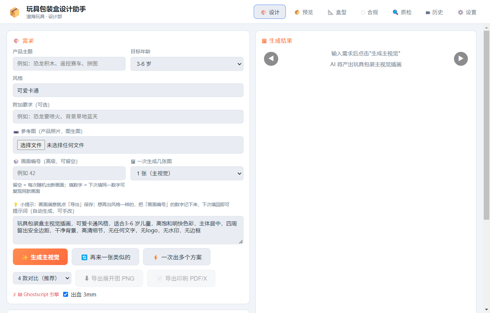
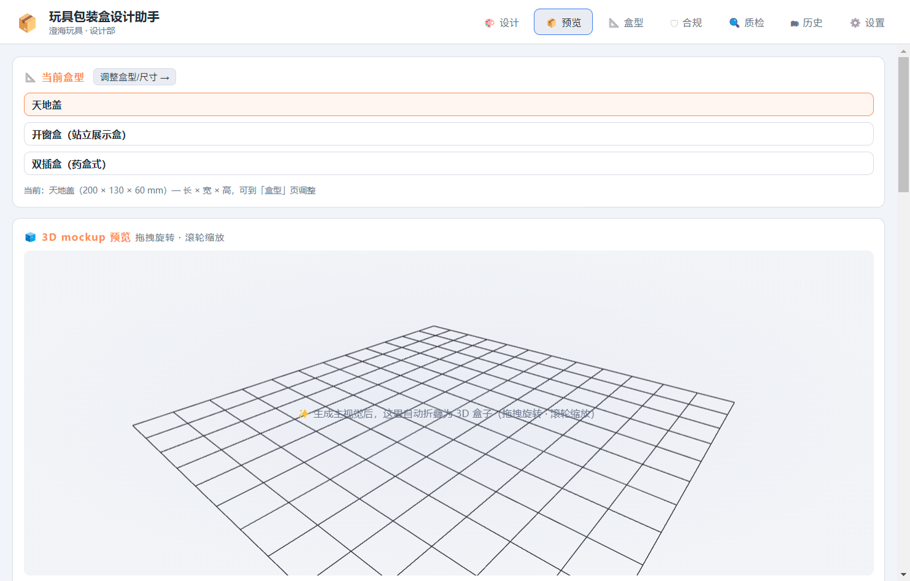
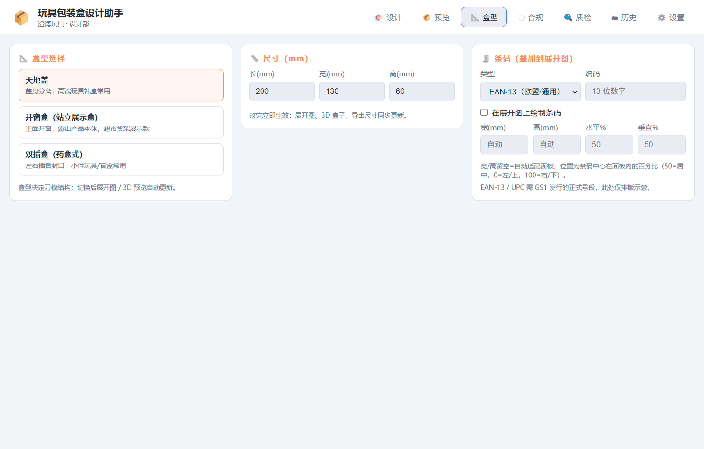
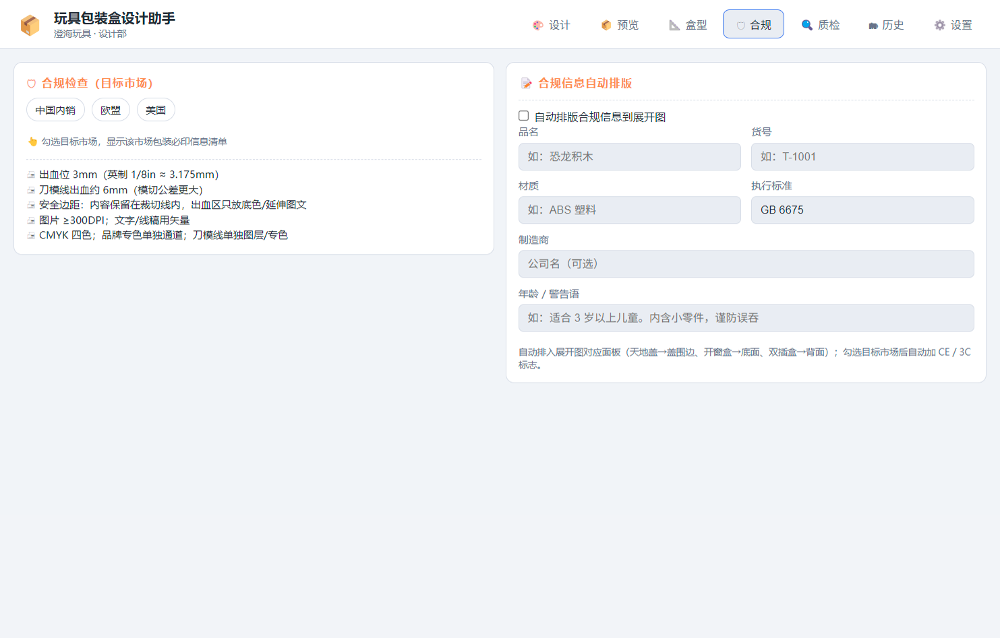
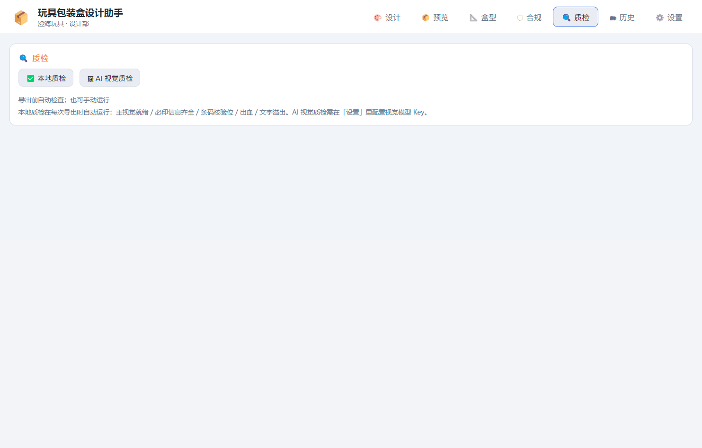
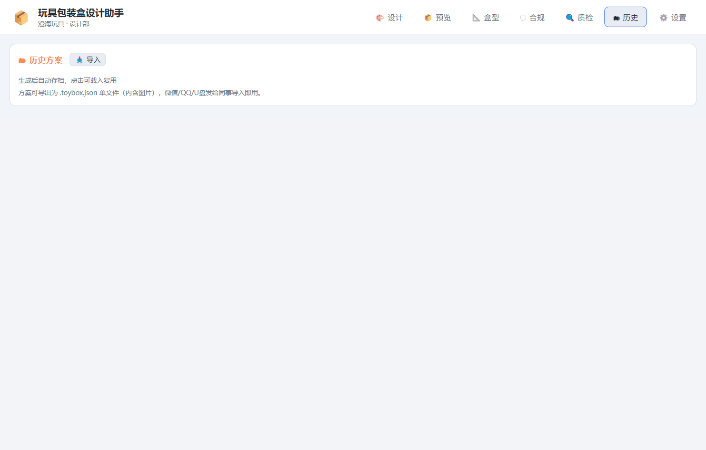
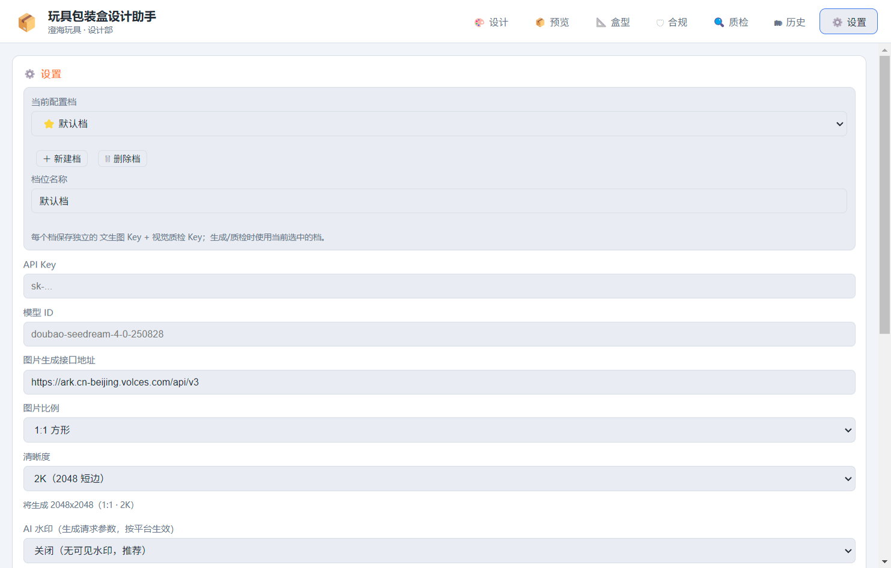

🎨 需求
🧩 版面套版（品牌/卖点/装饰，填内容即自动排到正面）
💡 小提示：画面满意就点「导出」保存；想再出风格一样的，把「画面编号」的数字记下来，下次填回即可
⚡ 快捷主题（一键填入）
点击直接填入「产品主题」，也可搭配目标年龄/风格一起生成。
🚀 三步上手
- ① 填需求：填产品主题、年龄、风格（可上传产品照片做参考）
- ② 生成：点「✨ 生成主视觉」出图；不满意点「🔄 再来一张类似的」或「⚡ 一次出多个方案」
- ③ 看效果 / 交付：切到「📦 预览」看展开图与 3D 盒子；回本页点「⬇ 导出展开图 PNG」或「📄 导出印刷 PDF/X」发印刷厂
🖼 生成结果
AI 将产出玩具包装主视觉插画
📊 当前配置
去「盒型」「合规」「设置」页修改后，这里实时同步。
📐 当前盒型
🧊 3D mockup 预览 拖拽旋转 · 滚轮缩放
✨ 工艺预览 仅预览模拟，导出/PDF 不含
📦 展开图预览
📐 盒型选择
盒型决定刀模结构；切换后展开图 / 3D 预览自动更新。
📏 尺寸（mm）
🪟 开窗窗口（占正面面板 %，仅开窗盒；预览页可拖动/缩放）
改完立即生效：展开图、3D 盒子、导出尺寸同步更新。
🧾 条码（叠加到展开图）
宽/高留空=自动适配面板；位置为条码中心在面板内的百分比（50=居中，0=左/上，100=右/下）。
EAN-13 / UPC 需 GS1 发行的正式号段，此处仅排版示意。
🛡 合规检查（目标市场）
📝 合规信息自动排版
底部标志（自动排到合规块右侧；CE/CCC 按目标市场自动）
自动排入展开图对应面板（天地盖→盖围边、开窗盒→底面、双插盒→背面）；勾选目标市场后自动加 CE / 3C 标志。
🔍 质检
本地质检在每次导出时自动运行：主视觉就绪 / 必印信息齐全 / 条码校验位 / 出血 / 文字溢出。AI 视觉质检需在「设置」里配置视觉模型 Key。
🗂 历史方案
方案可导出为 .toybox.json 单文件（内含图片），微信/QQ/U盘发给同事导入即用。
⚙️ 设置
主题即时生效；「跟随系统」随 Windows 深/浅色设置自动切换，点击「保存设置」后持久化。
测试连接会用表单当前填写的 接口地址 + Key 发起请求（不保存改动）。
Key 只保存在本机配置文件中。
🗑 缓存管理 （生成图片缓存，清理不影响历史方案库）
📖 使用教程 给设计部同事的快速上手手册
本工具把「玩具包装盒设计」做成流水线：提需求 → AI 出主视觉 → 自动拼盒型展开图 → 一键导出印刷文件。全程不需要会设计软件，也不需要懂 AI。
🚀 三步快速上手
🧭 各页签功能一览
按工作流程从左到右排列：设计 → 预览 → 盒型 → 合规 → 质检 → 历史 → 设置。
🎨 设计 —— 第一步：提需求、出主视觉

- 产品主题 / 目标年龄 / 风格：告诉 AI 要画什么、画给谁、什么画风，出图效果跟着这三个走
- 附加要求（可选）：补充细节，例如"恐龙要喷火、背景草地蓝天"
- 参考图（可选）：上传产品照片，AI 会照着产品画（图生图），推荐先传
- 画面编号（高级）：留空=每次随机出新画面；填同一个数字可复现同款画面，看到满意的就记下来
- 一次生成几张：默认 1 张主视觉；「⚡ 一次出多个方案」可一次出 4 款对比挑选
📦 预览 —— 看 3D 盒子和展开图

- 3D mockup 预览：鼠标拖拽旋转、滚轮缩放，直观看到盒子长什么样
- 展开图预览：自动拼好盒型展开图（刀模线 + 条码 + 合规信息），印刷厂就看这个
- 想换盒型或尺寸？点右上角「调整盒型/尺寸 →」直接跳转
📐 盒型 —— 选盒子结构、填尺寸、加条码

- 盒型选择：天地盖（礼盒感）、开窗盒（展示盒）、双插盒（常规快递盒），点一下即切换，展开图/3D 自动更新
- 尺寸（mm）：长、宽、高改完立即生效
- 条码：勾选「在展开图上绘制条码」，选类型（EAN-13 欧盟/通用、UPC-A 美国、Code 128 内部）、填编码；位置可调（50=居中）。注意：EAN/UPC 正式销售要用 GS1 发行的号段，这里先排版示意
🛡 合规 —— 必印信息与目标市场标志

- 目标市场：勾选要卖的地区（如欧盟→加 CE 标志、中国→加 3C 标志），自动印到展开图上
- 合规信息自动排版：勾选后填品名、货号、材质、执行标准、制造商、年龄/警告语，自动排到展开图对应面板（天地盖→盖围边、开窗盒→底面、双插盒→背面）
- 出口玩具的 CE 标志建议≥5mm 高，打印要看得清
🔍 质检 —— 导出前的自动体检

- ✅ 本地质检：检查主视觉是否就绪、必印信息是否齐全、条码校验位、出血、文字溢出——导出时自动跑，也可以手动点
- 🖼 AI 视觉质检：用视觉模型看生成图有没有文字/水印/畸形（需先在「设置」配好视觉质检 Key，可选）
🗂 历史 —— 方案存档与同事互传

- 每次生成自动存档，点记录即可载入继续改
- 方案可导出为 .toybox.json 单文件（内含图片），微信/QQ/U 盘发给同事，对方点「📥 导入」即用——换电脑也不怕
⚙️ 设置 —— 配置 AI 模型（管理员/IT 同事操作）

- API Key：图片生成的模型密钥（火山方舟/硅基流动/智谱等），由管理员统一配置，同事一般不用动
- 视觉质检 Key：AI 视觉质检用的模型密钥，可选
- 配置档：可建多套（公司/个人），切换即生效；「测试连接」可验证 Key 是否可用
🔑 自己申请 API Key（没有 Key 时看这里）
AI 出图调用的是外部平台的付费服务，需要一把「钥匙」（API Key）。公司一般会统一配好；如果还没有，可以自己注册申请，全程约 5~10 分钟。下面步骤以各平台官网实际显示为准。
通用三步：注册 → 拿 Key → 填进设置
① 用手机号注册平台账号，按提示完成实名认证；② 登录控制台，找到「API Key / API 密钥」页面，点创建并复制（一串 sk- 开头的字符）；③ 打开本应用「⚙️ 设置」→ 粘贴到 API Key 输入框 → 选对应的图片生成接口地址 → 点「测试连接」，显示成功就能用了。
推荐一：硅基流动（注册简单、模型多、有免费模型）
打开 cloud.siliconflow.cn → 手机号注册并完成实名 → 登录后点头像 →「API 密钥」→ 创建并复制。回应用「设置」：接口地址选「硅基流动」，模型 ID 到平台「模型广场」筛选生图标签看（如 FLUX.1-schnell 等，以页面显示为准）。
推荐二：阿里云百炼（阿里系账号，手机号即可）
打开 bailian.console.aliyun.com → 手机号注册/登录 → 按提示完成个人实名 → 控制台左侧「API Key」→ 创建并复制。回应用「设置」：接口地址选「阿里通义万相」；如果测试不通，按控制台「业务空间」里显示的 OpenAI 兼容地址填写。
推荐三：火山方舟（字节跳动出品，Seedream 模型出图质量好）
打开 console.volcengine.com/ark → 手机号注册并完成实名认证 → 控制台「API Key 管理」→ 创建并复制。回应用「设置」：接口地址选「火山方舟」，模型 ID 以控制台「模型广场」为准（如 doubao-seedream 系列）。
其他平台：智谱 / OpenAI
智谱：bigmodel.cn 注册 →「用户中心 → API Keys」创建 → 接口地址选「智谱」，模型填 cogview 系列。
OpenAI：platform.openai.com 注册需要海外手机号和海外支付方式，国内同事一般不建议；如需使用，在「API keys」页创建，接口地址选「OpenAI」。
⚠️ 注意：API Key 就是钱——每次出图会消耗账号余额，不要把 Key 发给别人；不用了可在平台控制台删除或停用。
❓ 常见问题
点「生成主视觉」一直转圈不出图？
多半是 API Key 没配或失效：让管理员在「⚙️ 设置」里填好 Key 并点「测试连接」。也可能是网络问题，稍后再试。
生成结果不满意怎么办？
点「🔄 再来一张类似的」换一张；或改风格/附加要求重新生成；也可以用「⚡ 一次出多个方案」一次出 4 款对比挑。
怎么把同一个画面再生成一遍？
把当时填的「画面编号」数字记下来，下次填回同一个数字即可复现同款画面（提示词也建议保持一致）。
印刷文件怎么导出？
生成后点「📄 导出印刷 PDF/X」（自带 PDF/X-3 + CMYK + 3mm 出血，可直接发印刷厂）；只做预览/发微信就导「⬇ 导出展开图 PNG」。
要装 Photoshop、AI 之类软件吗？
完全不用。本工具自带全部功能（含 PDF 转换引擎），装好就能用。
换电脑 / 给同事看方案怎么办？
「🗂 历史」页把方案导出为 .toybox.json 文件，发给对方后在「历史」页点「📥 导入」即可，图片和设置都在文件里。
生成结果存在哪里？
导出时自己选保存位置；自动存档在「🗂 历史」页。「⚙️ 设置」里有缓存清理（7 天前/全部），平时不用管。
💡 工作流小贴士
- 📷 先传产品照片再生成，画面贴合度明显更高
- ⚡ 批量对比用「一次出多个方案（4 款对比）」，挑中后再精调
- 🛡 出口订单先勾「合规」目标市场，避免漏印 CE/3C 标志
- 🏷 方案命名尽量带客户/品名（如"客户A-恐龙积木"），历史记录多了好找